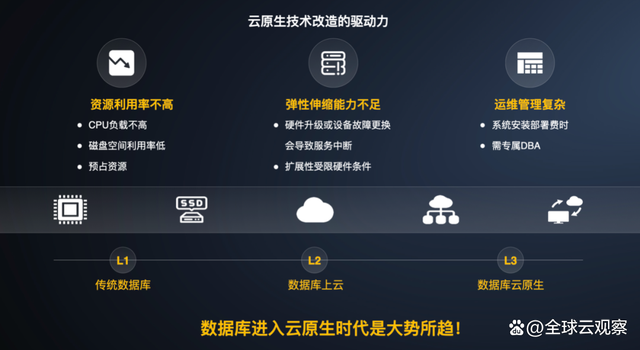
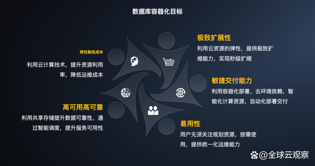
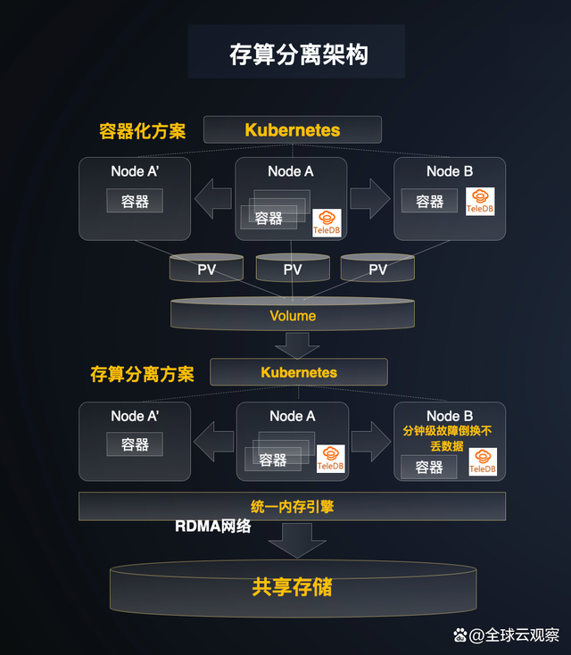

加速迈入云原生时代，国产数据库行业要变天
当前，千行百业正处于数字化转型的关键时期，数据已经成为企业重要的生产要素，甚至被业内人士称之为企业资产。
作为承载数据处理的基石，数据库在数字化变革中正在发挥着重要作用。
随着技术创新的加快，以及行业应用的广泛，国产数据库行业也正在发生翻天覆地的变化。
值得一看
▼▼▼
技术创新与用户需求双驱动，
云原生数据库渐成大势
至今为止，数据库技术发展了60多年。全世界第一个研发出数据库管理系统（DBMS）的公司来自美国，就是大家熟知的美国通用电气(GE)，时间为1961年。全世界第一个研发出商用关系数据库系统（Multics Relational Data Store）的公司也来自美国，是大家熟知的霍尼韦尔 (Honeywell)，时间为1976年。而后的几十年发展中，在数据库领域一直上演着“三国演义”，Oracle、IBM和Microsoft美国数据库三巨头把持着全球数据库产业的江山，呈现出传统数据库市场极度集中的格局。
不仅传统数据库市场集中化，而且其核心技术也采用集中式架构，成为主机时代支撑金融、能源、电信等行业企业关键业务应用负载的顶梁柱。
自2000年以来，随着互联网的兴起，云计算也逐渐走向行业的纵深应用。从而出现了一大批数据库行业的创新者，这得益于x86硬件集群的性价比表现，加上国内“去IOE”热潮一浪高过一浪。从此，分布式数据库登上了历史舞台。特别是2010年后，开源数据库的发展风起云涌，在越来越多的应用场景下呈现出替代传统数据库的新趋势，而且其技术采用分布式架构，同时也不断完善云管平台的功能，进一步助力数据分析的灵活性和交付的高效率，彰显出分布式数据库上云的价值。这里当然应感谢一下MySQL、PostgreSQL等开源数据库以及公有云带来的贡献。
但这还不够，随着移动互联网、云计算、大数据、物联网、人工智能等新兴技术的蓬勃发展，带来了用户数据的变化，不仅数据量大大增加，同时数据类型也呈现多元化。与此同时，企业上云加速了云上数据量的暴增，在数据库应用方面，不得不面对三大新挑战。

其一，计算与存储的硬件资源得不到充分利用，难以实现数据库应用高并发的负载能力。为了实现数据的高可用性，之前的分布式数据库一般采用“一主多从”模式。在未能实现全面读写分离的情况下，从节点承担不了写任务，仅能承担读写分离的读任务。也就是说在主节点上修改数据，会同步到从节点，从节点可以读取数据，不能做修改数据写入。因为从节点的CPU负载不高，无法分担主节点的写压力，计算资源形成闲置浪费，自然也拉低了整个集群的可用性。采用“一主多从”模式不仅计算资源利用率不高，而且存储利用率也偏低。在“一主多从”模式下，一份数据存储了多份冗余，势必造成集群的存储空间利用率不高，而且是预先存储冗余。这样也造成存储难以实现按需分配，数据难以在节点间高效流动，不但存储利用率低，而且存在单点性能瓶颈的隐患。
其二，灵活性不足，弹性伸缩能力捉襟见肘。传统分布式数据库采用“存算一体化”架构，计算与存储的融合捆绑虽然可以消除不必要的数据流动，对数据密集型企业的前期应用很有效果，但在企业数据量大增之后，传统分布式数据库单库性能表现不足，500G左右的分片拆分解决不了根本性的问题，计算与存储之间裂缝也将越来越大。数据库弹性伸缩能力出现严峻挑战，再依靠堆叠节点数量来提升性能和可靠性，企业成本势必会持续增加。从设计理念来看，采用服务器本地盘部署方式，数据库和本地磁盘又同属一个故障域，硬件升级与扩容严重受限。
其三，运维管理过于复杂，难以实现一站式的数据库服务。“存算一体”架构的分布式数据库的系统部署需要专业DBA支持，才能做到落地部署。计算与存储绑定，无法实现自动切换，一旦出现服务器故障，需要手工恢复数据，不仅可用性低下而且也费时费力，更别说一站式数据库服务的实现了。
既然“存算一体”架构的分布式数据库已经不能完全满足企业发展和业务应用需求，那么，这些挑战必然会催生数据库技术的新进步，分布式改造成为首选项。
就此，存算分离的云原生数据库吸引了业界的目光，融合云计算的弹性、开源数据库的易用性、智能高效运维的简便性等特点，对金融、运营商、互联网等企业数字化的高速发展有着高度适应性。
深究其原因，全球云观察进一步分析认为，一方面是技术发展趋势使然。数据库历经多年的发展，呈现出了从传统数据库到分布式数据库上云再到云原生数据库的发展趋势。另一方面，也是用户业务创新与应用需求的加速驱动，使得云原生数据库呈现出前所未有的发展魔力。
正如Gartner预测所提到的那样，到2023年，全球75%的数据库都会跑在云上。在技术创新与用户需求的双向驱动下，云原生数据库渐成大势。
应对挑战，
为何云厂商发展云原生数据库更给力？
很有意思的是，应对数据库三大新挑战，不同路数的数据库厂商各有各的发展路径。
传统数据库厂商借助上云策略的推进，实现数据库上云，也推出支持容器化等创新技术，但总让人觉得云原生不够彻底；新兴开源数据库厂商基于自身业务发展需求，与公有云合作并推出云原生数据库；公有云厂商有着天然的Cloud Native云原生优势，对于升级云原生数据库有着根本性的策略，也有着分布式改造的彻底性。
从全球来看，非常有代表性的云原生数据库如亚马逊云科技的Aurora、Google的Spanner、微软的Socrates等；从国内来看，非常有代表性的云原生数据库如阿里云的PolarDB、腾讯云的CynosDB、华为云的TaurusDB、天翼云的TeleDB等。此外，从这些国内外公有云厂商近年来的业绩表现来看，数据库已经成为虚拟机、CDN、存储之后又一个重要的云业务贡献者，并且数据库竞争的差异化不仅对公有云IaaS业务有着直接的拉动力，同时也让公有云厂商看到了更多的利润来源。可见，公有云厂商发展云原生数据库更为给力，成为其主要的推动者。其中，以天翼云为代表的运营商云，也成为推动数据库迈入云原生时代的一股不可忽视的重要力量。
2022年8月，TeleDB再次实现云原生数据库的能力升级，进一步夯实了天翼云作为中国云计算行业中“头部云”的核心竞争力。因而，我们也清楚地看到，天翼云在推进云原生数据库发展方面“下手特别重”，两大技术杀手锏同时出手。
杀手锏一，打破行业认知，实现数据库容器化。
之前，有行业人士认为数据库容器化很难保证数据的强一致性，同时在故障转移、弹性扩展和数据安全等方面也存在着诸多技术挑战，数据库不适合容器化的观点也曾盛行。虽然大家熟知应用的容器化趋势兴起得很早，但数据库的容器化却“相见恨晚”。
近年来Kubernetes逐渐成为容器技术的事实标准，客观上也加速了云原生技术的广泛应用和普及，从而带动了云原生数据量的持续增长，云原生的重要性对于金融、电信与互联网等企业数字化转型与升级尤为突出。自然而然，这也驱动着这些行业在云原生数据库服务方面有着迫切的需求。

打破行业认知，要实现分布式数据库从物理机到云到容器平台的迁移部署，就必须应对好强一致性挑战，以及稳定性与可用性挑战。天翼云不仅敏锐意识到了这些技术挑战，同时基于自研TeleDB Operator自定义的控制器和自定义资源CRD，实现容器化TeleDB高可用集群管理。基于Kubernetes API为PaaS和CI（持续集成）提供统一的支持，并通过Stateful Set、Service、Pod、PVC等为数据库集群管理平台提供服务。
天翼云TeleDB云原生数据库整体采用分层架构设计，简化了数据库容器化的复杂度。同时，尽可能降低多个集群实例之间的相互干扰，实现各个Cluster Instance集群实例的自治。数据库容器化后，部署安装也变得十分简单，基于天翼云自研技术实现数据库集群的高效创建，敏捷交付能力和易用性得以大大提升，部署密度也得以提升，硬件资源得以有效利用。同时也具备了弹性伸缩能力，强化了自动化调度。最令用户的数据工程师关心的是，不仅集群实例节点实现了故障自治，而且将运维知识沉淀为代码，进一步解放了运维，实现数据库统一管理与运维服务。一系列“下狠手”的容器化升级后，TeleDB必然可以为企业数字化带来降本增效，发挥出云原生数据库的创新价值。
杀手锏二，创新改造，实现分布式数据库的存算分离。
天翼云打破之前的分布式数据库存算一体架构常规，从根本上解决了计算与存储资源浪费和可用性差的问题，充分发挥出分布式数据库的高性能价值。

全球云观察分析发现，业界对于分布式数据库采用存算分离模式，一般针对计算和存储两个维度来构建资源池，实现计算与存储的两层解耦。但是天翼云将存算分离架构优势发挥得更为彻底，并进一步深化了计算节点无状态，分离出内存引擎层，实现内存池化，形成计算、内存、存储的三层分层的解耦。
通过RDMA技术进一步统一了内存资源，组成共享内存池，在提升内存引擎弹性的同时，也提升了内存利用率。从而也实现了多节点多读多写的能力，彻底解决之前“一主多从”模式下从节点无法进行数据编辑写操作的问题，数据库应用并发性能得以明显提升。
计算节点实现共享内存与共享数据存储，多副本归一，更好地实现了分布式数据库的数据多份副本一致性，在可用性上获得大幅度提升。
数据库容器化后，全局共享内存与存储的数据，计算节点完全无状态，不仅提升了部署密度，而且之前用户十分头疼的数据丢失、故障切换时间长等问题得以很好解决。
由此可见，实现分布式数据库容器化带来的价值十分明显，也是势在必行。不仅带给用户在云原生数据库应用可靠性方面大幅度的提升效果，而且也给当前许多用户十分关心的降本增效带来了可见的现实价值 。
聚焦未来机遇，
锻造企业数字化转型的创新基石
机遇在竞争中诞生，数据库行业的未来发展依然如此。聚焦未来发展机遇，与国外数据库巨头相比，云原生驱动国产数据库与全球数据库巨头处于同样的起跑线上。
天翼云不仅通过自研的技术创新解决了分布式数据库容器化的技术痛点，同时还在存算分离上实现计算、内存与存储的三层解耦。
与此同时，天翼云又有着天然的大数据规模化应用场景，对于数据库技术创新的深入有着重要的意义。毕竟数据库不仅需要技术迭代，更需要实际应用来驱动其创新与完善。
据介绍，天翼云TeleDB云原生数据库版本已在难度比较大的电信领域完成了实践。福建电信采用TeleDB云原生数据库方案之后，展现出了对于原有方案的创新优势。之前原有方案存在磁盘故障丢数据以及引发停机的隐患，数据库部署密度低，资源利用不高，交付复杂且效率低，以及缺乏弹性伸缩的扩展性等问题，都一一迎刃而解。
实践证明，天翼云TeleDB云原生数据库助力福建电信的数字化发展，带来了高效的资源利用率、快速的部署与交付、高弹性的灵活扩容等应用价值，尤其在高可靠性与降本增效上表现突出。
针对实现高可靠性，在RTO上，获得从分钟级到30秒之内的降低。采用多读多写集群，通过EDP技术，优化故障切换流程，有效降低日志回放量，配合高频CKPT实现故障快速切换，大大优化了数据库的目标恢复时间(RTO)。在数据保护机制上，采用企业级存储的成熟方案，保障极端条件下不丢失数据，可用性获得从4个9到6个9的提升。
针对降本增效，存算分离的再创新，将计算、内存、存储三大资源池实现解耦，更好发挥出CPU的计算能力，提升硬件资源利用率。同时实现多写多读的能力，完成原来一主多从架构的多副本归一，全局共享一份数据，共享存储大大降低了成本。
可见，通过TeleDB云原生数据库成功实践福建电信的案例，从中可以看到TeleDB升级优势与价值，下一步天翼云也将拓展TeleDB云原生数据库在金融、互联网、运营商等行业领域的应用广度与深度，携手合作伙伴与行业客户加速迈入云原生时代，重塑国产数据库行业的新格局。
面向未来，在抓住国产数据库历史发展机遇的过程中，天翼云正在不断强化在数据库领域的创新韧性，在云原生未来创新之路上，进一步加大自主研发的投入，聚焦深度自主创新、HTAP的云原生数据库和数据库多引擎同架构。有了更强大的云原生能力，相信天翼云必能在众多数据库厂商的竞争中赢得领先地位，锻造企业数字化转型的创新基石，赋能数字经济的可持续发展。